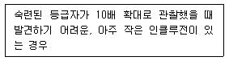
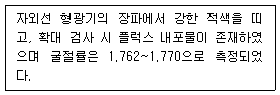
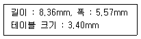
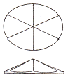

보석감정사(기능사) (2016-07-10 기출문제)
1과목: 보석학일반
1. 명주실을 가득 감아놓은 실 꾸러미를 불빛에 가까이 갖다 대보면 실 방향과 수직방향으로 하나의 아주 밝은 광선이 나타남을 볼 수 있다. 이와 같은 현상을 보석광물에서도 볼 수 있는데 이를 무슨 효과라고 하는가?
- 변색
- 성채
- 스타
- 묘안
(정답률: 72%)

2. 에메랄드를 모조할 때 사용하는 보석물질로 적합하지 않는 것은?
- 합성 에메랄드
- 착색한 녹색 칼세도니
- 녹색 전기석
- 청색 토파즈
(정답률: 62%)
3. 다음 중 가장 저렴한 합성보석의 제조방법은 무엇인가?
- 플럭스법
- 초크랄스키법
- 플레임 퓨전법
- 수열법
(정답률: 67%)
4. 루비를 붉은 전등 불빛으로 보면 어떤색으로 보이는가?
- 검은색
- 황색
- 적색
- 백색
(정답률: 72%)
5. 다음 중 도매상이 수행해야 할 중요한 역할에 부합되지 않는 것은?
- 제조업자들의 판매책을 담당하므로 새로운 상품을 소매상에 소개한다.
- 제조업자들의 상품을 더 넓은 시장에 내놓을 수 있게 한다.
- 소매상들에게 낮은 비용으로 물건을 공급한다.
- 모든 소비자들에게 도매가격으로 판매한다.
(정답률: 83%)
6. 터키석(turquoise)의 청색 원인이 되는 화학 성분은?
- 구리(Cu)
- 망간(Mn)
- 철(Fe)
- 코발트(Co)
(정답률: 63%)
7. 진주알을 한 줄로 꿰어가다가 두 줄 이상으로 나누어 꿰어가는 형태로 되어있는 진주 목걸이의 명칭은?
- 컨버터블
- 콤비네이션
- 스프랜더
- 갤럭시
(정답률: 54%)
8. 은수저에 즉각적인 변색을 일으키는 음식물은?
- 콩나물
- 계란 노른자
- 김치
- 밥
(정답률: 79%)
9. 다음 가닛에 대한 설명 중 틀린 것은?
- 알만다이트 가닛과 로돌라이트 가닛은 분광기 검사로 구별할 수 있다.
- 그로슐라라이트 가닛의 녹색 변종은 차보라이트이다.
- 파이로프 가닛은 알만다이트 가닛보다 굴절률이 낮다.
- 로돌라이트 가닛에서는 자색이 관찰된다.
(정답률: 38%)
10. 수열법(열수법)으로 제조된 합성보석에서 식별할 수 있는 특징은?
- 종자결정이나 못머리 형태의 내포물
- 커브선과 기포
- 백금 소편
- 용해되지 않는 산화지르코늄 분말
(정답률: 53%)
11. 다음 중 가장 높은 온도에서 녹는 귀금속은?
- 은
- 금
- 백금
- 팔라듐
(정답률: 63%)
12. 호박(amber)에 대한 설명 중 틀린 것은?
- 유기질 보석이다.
- 결정구조가 없는 비정질 물질이다.
- 산지는 러시아, 발트 해안, 폴란드 등이다.
- 복굴절성(DR) 보석이다.
(정답률: 62%)
13. 다음 정계 중 가장 많은 결정축을 가지고 있는 정계는?
- 육방정계
- 등축정계
- 정방정계
- 삼사정계
(정답률: 63%)
14. 모조석으로 많이 사용되는 유리와 플라스틱의 구조는?
- 비결정질
- 쌍정
- 결정집합체
- 미정질
(정답률: 56%)
15. 광원에 따라 구성 원소들이 빛을 선택 흡수하여 각기 다른 색을 보이는 특수현상이 나타나는 보석은?
- 수정
- 진주
- 알렉산드라이트
- 토파즈
(정답률: 66%)
2과목: 다이아몬드감정법
16. 층상구조의 보석에서 나타나는 특수효과로 백색광이 간섭과 회절현상에 의해 무지개빛으로 나타나는 것은?
- 샤토얀시
- 어벤츄레센스
- 아스테리즘
- 오리엔트
(정답률: 57%)
17. 루비와 사파이어의 색을 결정하는 요소가 아닌 것은?
- 철
- 티타늄
- 크롬
- 알루미늄
(정답률: 64%)
18. 22K라고 각인 된 금반지 속에 금이 아닌 금속은 얼마나 들어 있는가?
- 10.7%
- 8.3%
- 4.4%
- 2.0%
(정답률: 71%)
19. 테이블 중앙에서 한 개의 유색 내포 결정이 여러 개로 반사되어 보이는 것을 어떻게 작도하는 것이 가장 올바른가?
- 실제 위치에는 빨간색으로 그리고 반사된 것은 실선 표시한다.
- 실제 위치는 빨간색으로 그리지만 다른 것은 빨간 점으로 표시한다.
- 빨간색으로 보이는 것을 다 표시한다.
- 빨간색으로 한 군데 표시하고 그리고 코멘트 항목에 주석을 달 수 있다.
(정답률: 61%)
20. 10배의 확대경은 몇 인치의 초점거리를 갖는가?
- 1인치
- 2인치
- 3인치
- 4인치
(정답률: 59%)
21. 다이아몬드에 대한 설명 중 틀린 것은?
- 깨짐에 대한 저항이 방향에 따라 차이가 난다.
- 다른 모든 보석에 비해 인성이 가장 높다.
- 보석용 다이아몬드의 모스 경도는 10이다.
- 보석용 일반 굴절계로는 굴절률을 측정할 수 없다.
(정답률: 69%)
22. 다음 중 다이아몬드 비중으로 옳은 것은?
- 3.13
- 3.32
- 3.52
- 3.73
(정답률: 64%)
23. 다음에서 설명하는 클래리티 등급으로 옳은 것은?

- IF
- VVS1
- VS1
- SI1
(정답률: 42%)
24. 마스터 스톤의 조건으로 부적당한 것은? (단, GIA 방식이다.)
- 41 ~ 45% 사이의 퍼빌리언 깊이
- 20 ~ 25% 사이의 크라운 높이
- 0.3 ~ 0.4ct 중량
- 표준 라운드 브릴리언트 컷
(정답률: 60%)
25. 표준 라운드 브릴리언트 형태(아이디얼 컷)로 연마된 1.00ct에 해당하는 다이아몬드의 직경은?
- 5.25mm
- 6.00mm
- 6.50mm
- 7.00mm
(정답률: 63%)
26. 연마 후 다이아몬드의 표면에 노출되어 남아있는 내포된 크리스털(crystral)을 의미하는 것은?
- 캐비티(cavity)
- 노트(knot)
- 크리스털(crystal)
- 내부 자연면(indented natural)
(정답률: 49%)
27. 다이아몬드의 작도(Plotting)에서 흑색의 실선으로 표시하는 것은?
- 폴리시 라인
- 엑스트라 패싯
- 클리비지
- 클라우드
(정답률: 64%)
28. 다음 중 라운드 브릴리언트의 주대칭성에 포함되는 항목으로만 구성되어 있는 것은?
- C/oc, OR, T/G
- OR, WG, EF
- WG, EF, N
- EF, N, T/oct
(정답률: 59%)
29. 다이아몬드에 대한 설명 중 오일리(oily)라는 용어에 대한 설명 중 옳은 것은?
- 다이아몬드의 표면에 이물질이 많이 묻어 있는 상태
- 형관이 매우 강하여 백색광에서 흐릿하게 보이는 현상
- 형광색이 적색계열을 보일 때
- 다이아몬드 클래리티 등급이 낮아 내부에 인클루전이 많은 상태
(정답률: 65%)
30. 라운드 브릴리언트 컷의 다이아몬드에서 테이블 %를 계산하는 방법은 테이블 크기를 무엇으로 나눈 것인가?
- 전체 깊이 치수
- 거들 직경의 가장 작은 치수
- 거들 직경의 가장 큰 치수
- 거들 직경의 가장 작은 치수와 가장 큰 치수의 평균
(정답률: 70%)
3과목: 보석감별법
31. 페어 형태의 다이아몬드의 경우 가장 선호되는 길이와 폭의 비율은?
- 1.00 : 1.00
- 1.75~2.25 : 1.00
- 1.33~1.66 : 1.00
- 1.50~1.75 : 1.00
(정답률: 50%)
32. 컬러 등급 구분에서 다이아몬드의 컬러가 E 마스터 스톤 보다 짙고 G 마스터 스톤보다 옅은 경우의 컬러 등급은? (단, GIA 방식이다.)
- D 또는 F
- E 또는 F
- F 또는 G
- G 또는 H
(정답률: 61%)
33. 다이아몬드의 색 등급에서 가장 높은 등급의 표시이며, 가장 가치가 높은 등급은?
- D
- G
- K
- N
(정답률: 75%)
34. 컬러필터로 보았을 때 핑크 또는 적색으로 반응하는 녹색 보석은?
- 어벤츄린 쿼츠
- 크리소프레이즈
- 염색 녹색 쿼츠
- 제이다이트
(정답률: 36%)
35. 다음과 같은 특성을 나타내는 보석은?

- 알만다이트 가닛
- 합성 루비
- 스피넬
- 로돌라이트 가닛
(정답률: 60%)
36. 산호의 열반응 검사 시 발생하는 독특한 냄새는?
- 단백질 타는 냄새
- 향 타는 냄새
- 석탄 타는 냄새
- 합성수지 타는 냄새
(정답률: 68%)
37. 화학 검사에서 희석된 염산(물:염산 = 10:1)용액에 의해 발포현상이 나타나는 보석은?
- 칼사이트
- 칼세도니
- 스타루비
- 헤마타이트
(정답률: 49%)
38. 분광기를 이용한 검사방법으로 옳지 않은 것은?
- 투과법
- 굴절법
- 외부 반사법
- 내부 반사법
(정답률: 56%)
39. 자외선 형광성 검사시 형광반응이 나타나지 않는 보석은?
- 루비
- 엠버
- 알만다이트 가닛
- 진주
(정답률: 29%)
40. 편광기의 구조에 있어서 상부와 하부의 편광판의 명칭은?
- 상부 - 애널라이저, 하부 - 니콜라이저
- 상부 - 애널라이저, 하부 - 폴라라이저
- 상부 - 폴라라이저, 하부 - 애널라이저
- 상부 - 폴라라이저, 하부 - 니콜라이저
(정답률: 58%)
41. 보석의 투명도에서 빛이 확산되어 투과하고 보석을 통해 사물을 보면 구별할 수 없는 상태를 가리키는 등급은?
- 투명
- 아투명
- 반투명
- 아반투명
(정답률: 58%)
42. 중액법에 의한 비중검사 시 3.32 비중액에 보석을 넣었을 때 가라앉았다면 이 보석으로 가장 적절한 것은?
- 투어멀린
- 사파이어
- 안달루사이트
- 터쿼이즈
(정답률: 40%)
43. 이색경을 사용한 다색성 감별시 강한 삼색성을 띠는 보석은?
- 안달루사이트
- 투어멀린
- 에메랄드
- 루비
(정답률: 62%)
44. 배율이 10배인 루페(Loupe)에 비하여 20배의 루페는 어떤 차이점이 있는가?
- 초점 거리가 더 짧다.
- 초점의 시야 폭이 더 넓다.
- 관찰 범위가 넓다.
- 초점의 거리가 2.5cm 이다.
(정답률: 68%)
45. 보석의 경도검사에 관한 설명으로 옳지 않은 것은?
- 눈에 잘 띠지 않는 부분을 골라 검사한다.
- 검사한 표면을 닦고 상처가 생겼는지 여부를 확대하여 검사한다.
- 무리한 힘을 가하지 않아야 한다.
- 커팅된 투명석 등에 한정하여 실시한다.
(정답률: 67%)
4과목: 보석가공기법
46. 자외선 형광성 검사 방법에 대한 설명으로 옳지 않은 것은?
- 검사하기 전에 보석을 깨끗이 닦는다.
- 형광기의 램프를 켜고 장파 또는 단파는 일관성을 유지하기 위해 항상 같은 순서로 검사한다.
- 검사하는 동안 보석의 위치를 바꾸거나 흔들리지 않게 보석을 잡고 있을 경우에는 반드시 트위저를 사용해야 한다.
- 형광반응이 강한 보석과 약한 보석을 함께 검사하지 않도록 해야 한다.
(정답률: 57%)
47. 미세하고 평행한 침상 내포물로부터 반사된 빛에 의해 생기는 특수효과는?
- 이리데센스
- 래브라도레센스
- 샤토얀시
- 어벤츄레센스
(정답률: 60%)
48. 분광기를 사용해서 흡수 스펙트럼을 관찰하였을 때 나타나지 않는 형태는?
- 컷 오프
- 밴드
- 라인
- 성장선
(정답률: 69%)
49. 미지의 보석이 공기 중에서 중량은 3.24ct이고, 물속에서의 중량은 2.43ct일 때 비중은 얼마인가?
- 4.00
- 3.25
- 3.00
- 2.75
(정답률: 62%)
50. 보석의 표면 구조 및 특징 등을 효과적으로 관찰할 수 있는 조명법은?
- 명시야 조명
- 두상 조명
- 핀포인트 조명
- 암시야 조명
(정답률: 51%)
51. 굴절률을 측정할 때 낮은 수치의 굴절률은 변화하고 높은 수치의 굴절률은 일정하다면 이 보석의 광학특성과 광학부호는 무엇인가?
- 일축성 포지티브(U+)
- 일축성 네거티브(U-)
- 이축성 포지티브(B+)
- 이축성 네거티브(B-)
(정답률: 53%)
52. 다음 조건과 같은 마키즈 형의 테이블 비율은 얼마인가?

- 41%
- 61%
- 67%
- 72%
(정답률: 42%)
53. 캐보션 연마 후 빛의 간섭결과에 의한 특수현상이 아닌 것은?
- 유색효과 (play of color)
- 이리데센스효과(iridescence)
- 진주효과(orient)
- 성채효과(asterism)
(정답률: 48%)
54. 스탭 컷 스타일(step cut style) 중 에메랄드 컷은 거들면을 포함하여 보통 몇 개의 면으로 연마되는가?
- 50면
- 54면
- 58면
- 62면
(정답률: 58%)
55. 세팅하려는 보석보다 조금 큰 지름, 너비의 고랑을 만들고, 양쪽에 생긴 둑 사이에 보석을 끼우고 둑을 조여서 보석을 고정시켜 난물림(setting)하는 방법은?
- 조각 난물림
- 신관 난물림
- 접시 난물림
- 채널 난물림
(정답률: 49%)
56. 다음 중 진주 목걸이의 길이에 따른 분류에서 가장 긴 목걸이의 명칭은? (단, CIBJO 기준이다.)
- 로프(Rope)
- 마티니(Matinee)
- 오페라(Opera)
- 프린세스(Princess)
(정답률: 62%)
57. 라운드 브릴리언트형의 연마순서로 옳은 것은?
- 거들면 - 퍼빌리언 - 크라운 - 테이블면
- 거들면 - 테이블면 - 크라운 - 퍼빌리언
- 테이블면 - 크라운 - 거들면 - 퍼빌리언
- 테이블면 - 거들면 - 크라운 - 퍼빌리언
(정답률: 53%)
58. 다음 그림과 같은 형태의 컷은?

- 6면 로즈 컷(six-facet rose cut)
- 싱글 컷(single cut)
- 마그나 컷(magna cut)
- 올드 마인 컷(old-mine cut)
(정답률: 70%)
59. 텀블링 연마에 대한 설명으로 옳은 것은?
- 텀블러를 이용하여 보석재료의 거친 조각들을 면과 모서리가 없는 자연스러운 형태로 연마하는 방법이다.
- 텀블링 연마는 큰 원석의 연마만이 가능하다.
- 텀블링 연마에서 경도가 4 이하인 원석의 경우는 습식방법을 이용한다.
- 연마제로는 산화크롬이 주로 사용된다.
(정답률: 58%)
60. 색이 짙은 보석을 옅은 색으로 보이게 하는데 사용되는 캐보션의 형태는?
- 단순캐보션
- 이중캐보션
- 오목캐보션
- 역캐보션
(정답률: 62%)